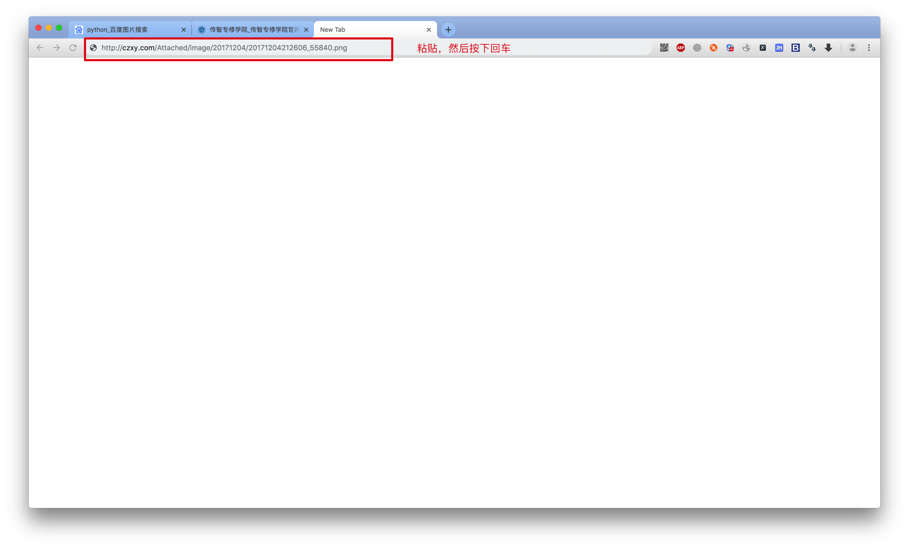
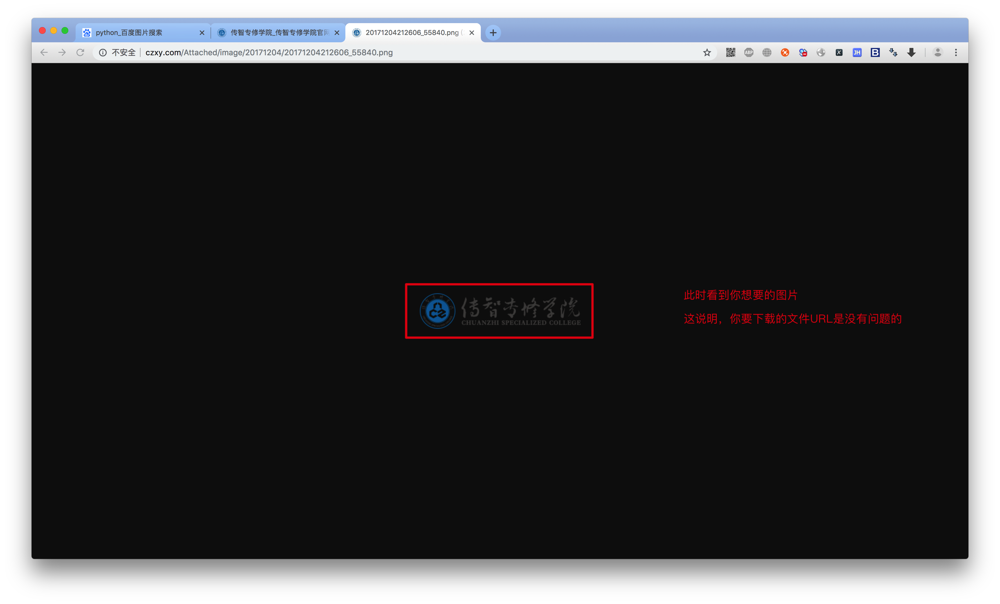
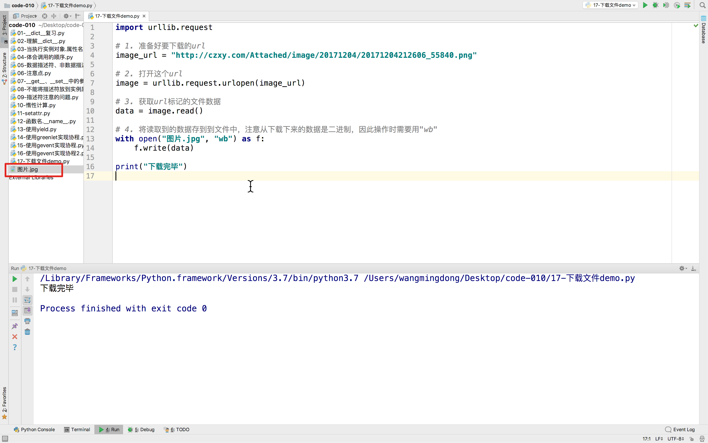
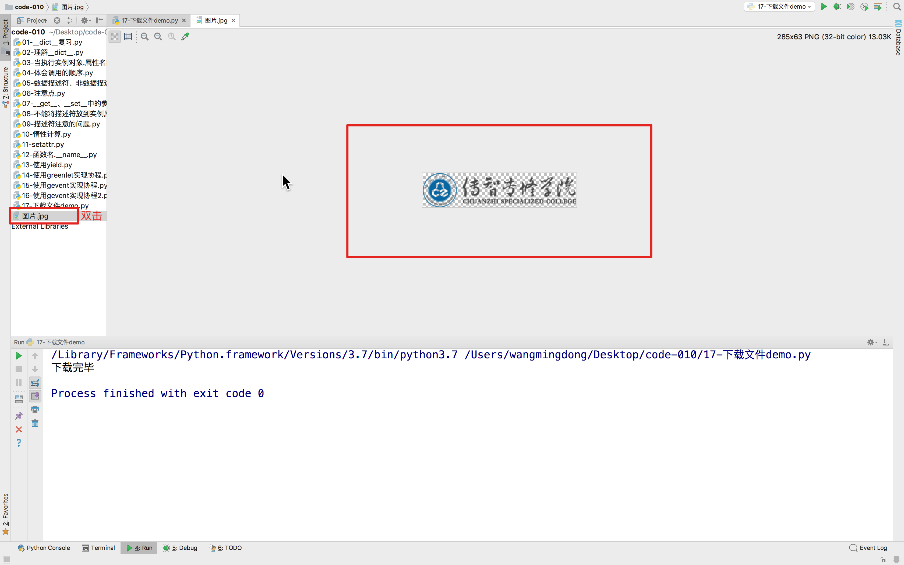

并发下载器
1. 下载一个文件
1.1 流程
网上有很多的文件，例如图片、音乐、视频等，当我们需要下载这样的文件的时候，我们可以按照如下的流程
- 通过浏览器分析要下载的文件的URL
- 通过
urllib.request中的urlopen打开这个URL - 通过
read读取URL标记资源文件数据 - 将上一步读取到的数据存入到文件
1.2 案例
步骤1：得到URL
知道想要下载哪个文件



步骤2：使用程序下载
import urllib.request
# 1. 准备好要下载的url
image_url = "http://czxy.com/Attached/image/20171204/20171204212606_55840.png"
# 2. 打开这个url
image = urllib.request.urlopen(image_url)
# 3. 获取url标记的文件数据
data = image.read()
# 4. 将读取到的数据存到到文件中，注意从下载下来的数据是二进制，因此操作时需要用"wb"
with open("图片.jpg", "wb") as f:
f.write(data)
print("下载完毕")
运行效果：


2. 并发下载
实现多个视频下载
from gevent import monkey
import gevent
import urllib.request
import ssl
monkey.patch_all()
ssl._create_default_https_context = ssl._create_unverified_context
def my_downLoad(file_name, url):
print('GET: %s' % url)
resp = urllib.request.urlopen(url)
data = resp.read()
with open(file_name, "wb") as f:
f.write(data)
print('%d bytes received from %s.' % (len(data), url))
gevent.joinall([
gevent.spawn(my_downLoad, "1.mp4", 'http://video.howdoit.cn/Atlas,%20The%20Next%20Generation.mp4'),
gevent.spawn(my_downLoad, "2.mp4", 'from gevent import monkey
import gevent
import urllib.request
import ssl
monkey.patch_all()
ssl._create_default_https_context = ssl._create_unverified_context
def my_downLoad(file_name, url):
print('GET: %s' % url)
resp = urllib.request.urlopen(url)
data = resp.read()
with open(file_name, "wb") as f:
f.write(data)
print('%d bytes received from %s.' % (len(data), url))
gevent.joinall([
gevent.spawn(my_downLoad, "1.mp4", 'http://video.howdoit.cn/Atlas,%20The%20Next%20Generation.mp4'),
gevent.spawn(my_downLoad, "2.mp4", 'http://video.howdoit.cn/%E8%83%BD%E5%8A%9B%E8%A1%A5%E5%85%85Xschool%E5%88%9B%E5%A7%8B%E4%BA%BAAngel%20Lin%EF%BC%9A%E6%89%93%E7%A0%B4%E8%AF%BE%E5%A0%82%E7%9A%84%E5%A2%99%EF%BC%8C%E5%9F%B9%E5%85%BB%E5%9B%BD%E9%99%85%E5%8C%96%E7%9A%84%E5%B0%91%E5%B9%B4.mp4')
])
上面的代码，完成了下载2个视频
可以将url换为自己需要下载视频、音乐、图片等网址，重新执行即可完成下载